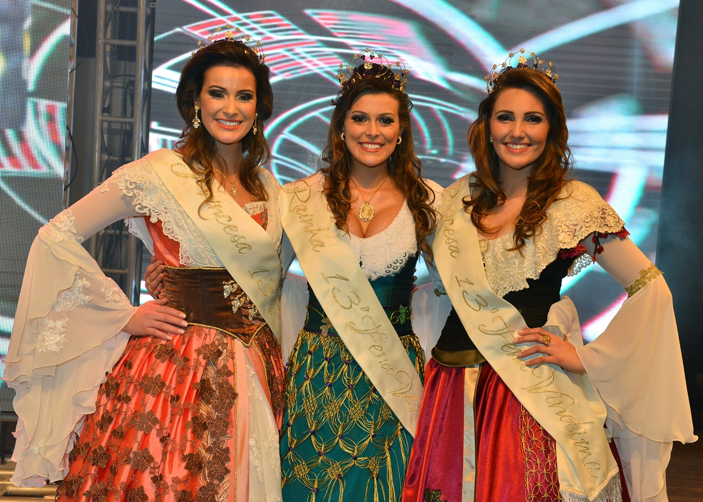
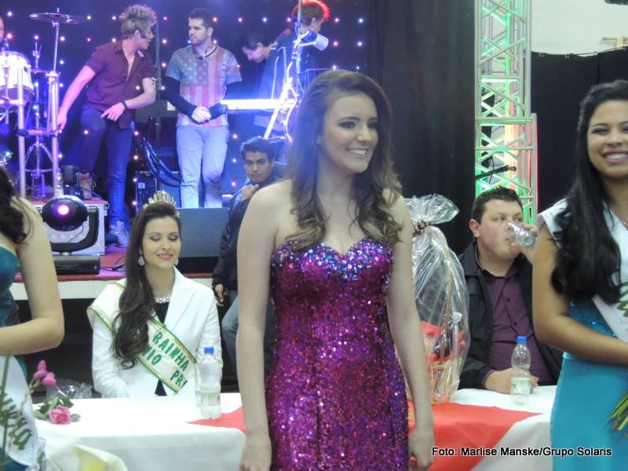
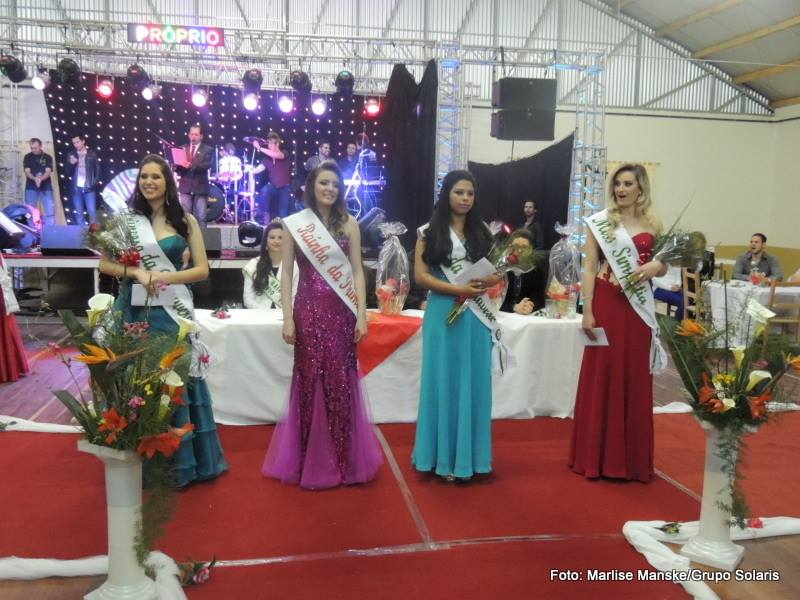
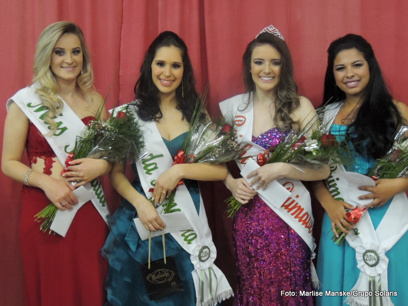

Descendente MOLON é Miss Baby Rio Grande do Sul!

|
Maria Clara Molon Mohr, filha de Edson Mohr e de Valdene Molon, foi escolhida, em evento realizado em Torres no dia 06 de setembro, como MISS BABY RIO GRANDE DO SUL/2014. Com um ano e quatro meses, Maria Clara concorreu representando Caxias do Sul, com traje da Festa da Uva e de gala elaborado por Zaida Marcante.
|

|
|
Rainha da Fenavindima é MOLON!
|  |
FLORES DA CUNHA - BRASIL
|
{kind=link}
Deixando de lado as torcidas e comunidades, devemos nos orgulhar de ter uma representante legítima da família Molon, como nossa Rainha da FENAVINDIMA: Janaína Molon Massarotto, filha de Luiz Massarotto e Severina Molon Massarotto. Interessante destacar, o que saiu no suplemento do Jornal O Florense:
"... Além disso, fazer parte da FENAVINDIMA para mim será uma honra homenagear o nosso agricultor e a sua sua preciosidade, a uva. Além disso, fazer parte da FENAVINDIMA é uma oportunidade de representar o empenho dos meus antepassados, entre os quais cito meu bisavô Demétrio Molon, que fez parte do primeiro Conselho Municipal de Flores da Cunha e foi participante da comissão pró-emancipação, colaborando de forma significativa com esta cidade que tanto me orgulha".
Janaína é descendente por parte dos Molon de ARZIGNANO e Massarotto de SAN VITO DE LEGUZANO/SCHIO, da Província de Vicenza.
Rainha e Princesa da FECOUVA são descendentes de Molon!
Como estamos destacando a beleza e outros atributos das descendentes da família Molon, queremos evidenciar também que a 12ª Festa Colonial da Uva e 2ª Festa do Moranguinho, realizada em fev. e mar. de 2013, em Otávio Rocha, Flores da Cunha/RS, tiveram como Rainha TAILINE BEDIN MOLON e como princesa CAREN LUANA MOLON.
A FECOUVA é a segunda festa mais antiga, relacionada ao setor da uva e vinho na serra gaúcha. Ela evidencia desde 1966 a cultura da imigração italiana e as atividades na área da uva e vinho e nos últimos anos na produção de moranghinhos.
Foto com uvas e morangos: A Rainha Tailini, e as princesas (da esquerda para direita) Thaísa Scopel e Caren Luana Molon.

|

|

|
Miréia Caldart Zorzin é a Rainha da Primavera/2014: ela também é descendente Molon!
Na noite de 20/09/14, em São João de Antônio Prado, foi realizada a escolha da Rainha da Primavera em sua 30ª edição. Concorreram 08 candidatas da região.
Miréia Caldart Zorzin, representante de Otávio Rocha/Flores da Cunha, apresentada pelo Grupo de Jovens JUCRI, foi eleita a Rainha da Primavera 2014, juntamente com as princesas Prescila Martins Rodrigues e Roberta Benetti e a miss simpatia Valéria Dal Bosco.
Os nossos cumprimentos a Miréia Caldart Zorzin pela grande conquista. Queremos destacar, que em pouco mais de mês, representantes da família Molon, conquistaram três títulos: Rainha da 13ª Fenavindima, Miss Baby Rio Grande do Sul e agora Rainha da Primavera/2014.
Miréia é filha de Milton Zorzin e Rosane Caldart. Milton é filho de Benvenuta Molon e Bruno Zorzin. Benvenuta é filha de Angelo Molon e Hermenegilda Trentin (que era filha de Giuseppina Molon Trentin) e Angelo era filho do pioneiros imigrantes Antonio Molon e Regina Ghiotto.
|  |  |  |
{kind=link}
{kind=link}
{kind=link}